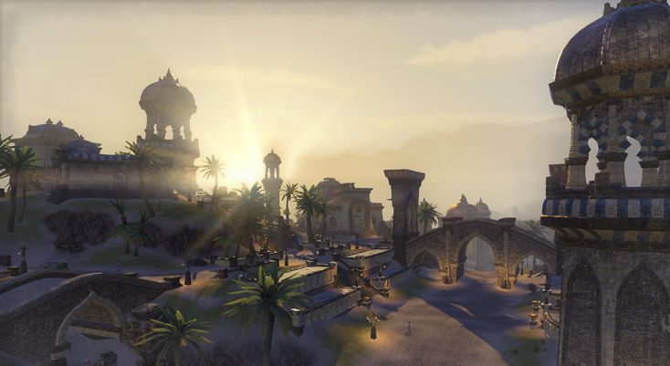

Sentinel during 2nd Era in Elder Scrolls Online
Sentinel is a great city of the Redguards, and the capital of both
the kingdom of Sentinel and the province of Hammerfell.
It is located in the northwestern hills of Hammerfell, overlooking the Iliac Bay.
The population of the region as a whole is relatively low, due to the inhospitable
nature of the surrounding Alik'r Desert.
However, some
fertile fields can be found along the coast near Sentinel,
which actually makes the city a major population center in
Hammerfell.
Sentinel contains a structure called the Impervious
Vault — a fortified storehouse under the city that
houses the Ansei Wards, ancient Redguard relics
that ward off necromancy.
The city is an exotic retreat for the nobility of
Daggerfall
and Wayrest
who delight in the cooking,
craftsmanship, and plays which can be found there.
It has historically been a Forebear city.
In 4E 42, Altmer dissidents who had fled to
Sentinel from the Thalmor
in Alinor were attacked
by Thalmor operatives in what became known as the
Night of Green Fire.
During that event, the entire refugee district
of the city was destroyed.
An Altmer legionary named
Legate Fasendil was stationed there at the time
and commented, "The Aldmeri Dominion was not content
with killing dissidents at home, so they went to
Hammerfell to finish the job."